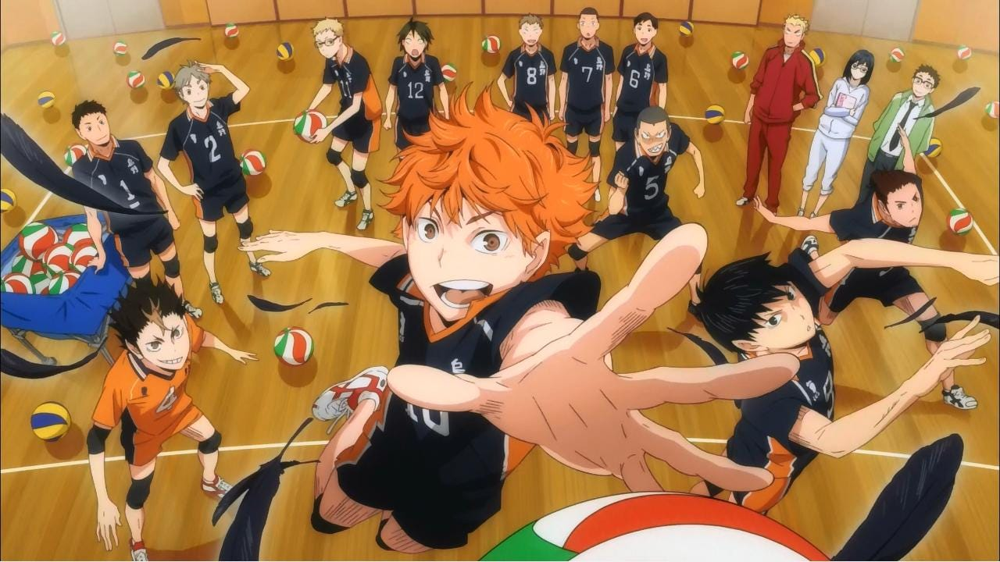

ANIME
HAIKYUU

Of course, as a volleyball player, I love Haikyuu
It captures the intricacies of the sport really well
Fullmetal Alchemist

The one that made me fall in love with anime, Fullmetal
Alchemist handles some hard hitting existencial questions with ease
HORIMIYA
Hopeless romantic that I am, this show warms my soul